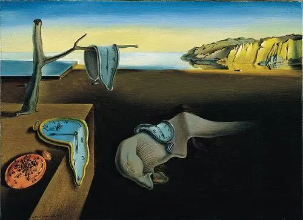

超现实主义
超现实主义是一种20世纪的艺术和文学运动，旨在探索梦境和潜意识。这一流派的艺术家和作家试图通过超越现实的方式，揭示隐藏在意识之下的真理。超现实主义作品常常充满奇异和幻想的元素。
艺术家介绍
达利
幻想国度之神：达利 Salvador Dali 1904 ~ 1989 Spain
西班牙超现实主义画家和版画家，享有“当代艺术魔法大师”的盛誉。 他所创造的奇怪、梦呓般的形象，不仅启发了人们的想象力、诱发人们的幻觉，且以非凡的力量，吸引着观赏者的视觉焦点，更是以探索潜意识的意象著称。 达利总是热爱着他儿时的风景环绕菲格拉斯城的大平原和有橄榄林与尖秃岩石的加泰罗尼亚海岸。
达利的画常搜集梦幻中的表现题材，有些画题直接点题为“梦”。 但他的“梦”与其他超现实主义画家画上所展现的“梦”的区别在于，达利创造了一种真实感，还寄寓某些他所特别偏爱的内涵。
夏卡尔
讴歌乡愁与爱情：夏卡尔 Marc Chagall 1887 ~ 1985 Russian
他是超现实主义画家之一，出生于俄国的犹太家庭，父母只靠着微薄的收入养育10个子女，家境贫困。
黑暗的木屋、迷信的乡民、演奏着小提琴的人、牛、羊、鸡以及马等都存在于少年夏卡尔的心中，这一幕幕的印象，成为了他的创作泉源。
作品赏析
《记忆的永恒》
直到20世纪20年代末期，达利的画风才日趋成熟。首先是他吸收了西格蒙德·弗洛伊德（Singmund Freud）的思想理念，弗洛伊德曾在关于性爱对于潜意识意象的重要著作说过：“当我们的清醒头脑麻木之后，潜藏在身上的童心和野性才会活跃起来。”其次是他结交了一群才华横溢的巴黎超现实主义者，这群艺术家和作家正努力证明着人的潜意识是超乎理性之上的“更为重大的现实”。
《内战的预兆 1936》
在达利的作品中，我们还能发现一个特点就是：他把现实世界中不连贯的片断混合在一起。 达利喜欢描绘梦境中的景象，以一种稀奇古怪、不合情理的方式，将普通物像扭曲或者变形。达利对这些物像的描绘精细入微，几乎达到毫发不差的逼真程度，通常将它们放在十分荒凉但阳光明媚的风景里。在这些谜语一般的意象中，最有名的大概是“记忆的永恒”。
奇境中的艾丽斯
在艺术创作上，达利毕生孜孜不倦地、准确地刻画着自己真实的内心世界。因为他相信，惟有借助于艺术创作，才能使他自己的潜意识恣意驰骋，才能使他自己摆脱人类理性的束缚。他沉醉于梦境和幻想的世界里，梦想与现实的落差常常引发的冲突，似乎引导达利走上了超现实主义的道路。正如他的作品《奇境中的艾丽斯》中的艾丽斯一样，达利经历了漫长的梦之苦旅，但是达利始终坚信，只有梦才能真实地、准确地、有意义地表现其个性。
the double secret
1927年到1930年间，马格利特移居到巴黎。在这期间，他认识了安德烈比图，并加入了超现实主义者的行列，大量创造出具有神秘语意的迷人画作，同时也为许多时装海报或乐谱封面进行商业平面设计。1936年他的作品曾到美利坚合众国纽约展出，后来又在1965年现代艺术博物馆、1992年大都会艺术博物馆举行回顾展。